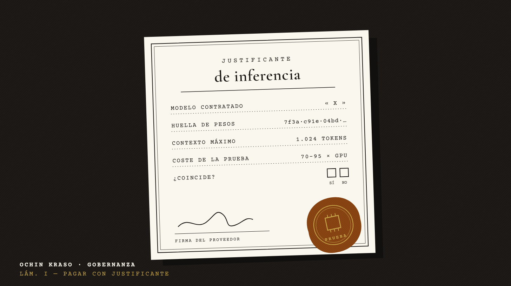
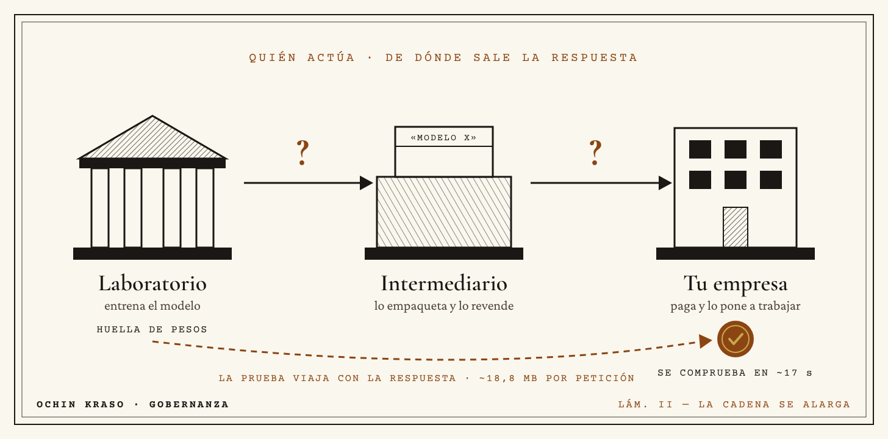
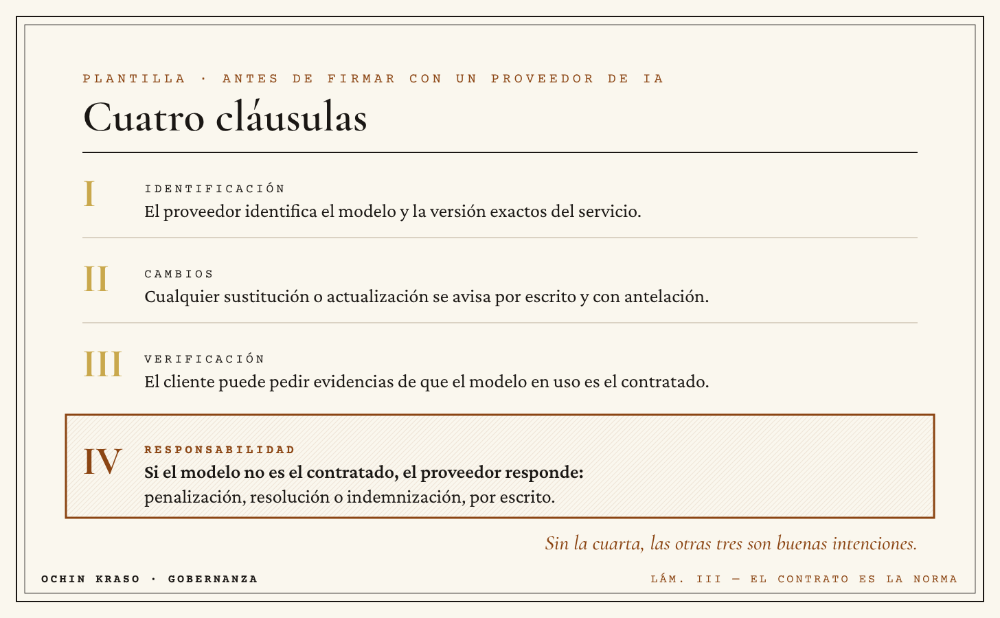

<title>Justificante de inferencia</title>
<meta name="claude:viewport-fit-sides" content="cover">
<link rel="preconnect" href="https://fonts.googleapis.com">
<link rel="preconnect" href="https://fonts.gstatic.com" crossorigin>
<link rel="stylesheet" href="https://fonts.googleapis.com/css2?family=Cormorant+Garamond:ital,wght@0,500;0,600;0,700;1,500&family=Crimson+Pro:ital,wght@0,400;0,600;1,400&family=Courier+Prime:wght@400;700&display=swap">
<style>
/* Layout: columna de lectura de newsletter (760px) sobre papel, con láminas grabadas a sangre de columna. Design System Ochin Kraso v1.0.0 */
:root {
  --paper: #FAF7EE;
  --ink: #1A1714;
  --accent: #8B4513;
  --gold: #C9A84C;
  --rule: #CFC6B4;
  --soft: #4A423A;
  --panel: #F2ECDD;
  --font-display: "Cormorant Garamond", Georgia, "Times New Roman", serif;
  --font-body: "Crimson Pro", Georgia, "Times New Roman", serif;
  --font-mono: "Courier Prime", "Courier New", Courier, monospace;
  --col: 760px;
}
@media (prefers-color-scheme: dark) {
  :root:not([data-theme="light"]) {
    --paper: #17140F; --ink: #EFE8D8; --accent: #D08A55; --gold: #D6B862;
    --rule: #3A332A; --soft: #BDB2A0; --panel: #221D16; color-scheme: dark;
  }
}
:root[data-theme="dark"] {
  --paper: #17140F; --ink: #EFE8D8; --accent: #D08A55; --gold: #D6B862;
  --rule: #3A332A; --soft: #BDB2A0; --panel: #221D16; color-scheme: dark;
}
body {
  background: var(--paper);
  color: var(--ink);
  font-family: var(--font-body);
  font-size: 22px;
  line-height: 1.7;
  padding-left: max(16px, env(safe-area-inset-left, 0px));
  padding-right: max(16px, env(safe-area-inset-right, 0px));
}
.wrap { max-width: var(--col); margin: 0 auto; padding-block: 40px 72px; }
.mast {
  display: flex; flex-wrap: wrap; justify-content: space-between; gap: 8px 24px;
  font-family: var(--font-mono); font-size: 13px; letter-spacing: .22em; text-transform: uppercase;
  border-top: 3px solid var(--ink); border-bottom: 1px solid var(--ink); padding-block: 10px;
}
.mast b { font-weight: 700; }
.mast span { color: var(--accent); }
h1 {
  font-family: var(--font-display); font-weight: 600; font-size: clamp(38px, 6.4vw, 60px);
  line-height: 1.06; letter-spacing: -.01em; margin: 36px 0 16px; text-wrap: balance;
}
.dek { font-family: var(--font-display); font-style: italic; font-size: 27px; line-height: 1.35; color: var(--soft); margin: 0 0 24px; text-wrap: balance; }
.byline { font-family: var(--font-mono); font-size: 14px; letter-spacing: .12em; text-transform: uppercase; color: var(--soft); margin: 0 0 32px; }
figure { margin: 36px 0; }
figure img { display: block; width: 100%; max-width: 100%; height: auto; border: 1px solid var(--rule); }
figcaption { font-family: var(--font-mono); font-size: 14px; line-height: 1.5; color: var(--soft); margin-top: 10px; }
figcaption b { color: var(--accent); font-weight: 700; letter-spacing: .1em; }
.lead::first-letter {
  font-family: var(--font-display); font-weight: 700; float: left; font-size: 92px; line-height: .78;
  padding: 8px 10px 0 0; color: var(--accent);
}
p { margin: 0 0 22px; }
h2 {
  font-family: var(--font-display); font-weight: 600; font-size: 36px; line-height: 1.15;
  margin: 52px 0 18px; text-wrap: balance; display: flex; align-items: baseline; gap: 14px;
}
h2::before { content: ""; flex: 0 0 22px; height: 2px; background: var(--gold); transform: translateY(-10px); }
.front { margin: 0 0 22px; }
.front .k { font-family: var(--font-mono); font-size: 13px; letter-spacing: .2em; text-transform: uppercase; color: var(--accent); display: block; margin-bottom: 2px; }
.front .k b { color: var(--ink); }
.note { font-style: italic; color: var(--soft); }
ul.fine { list-style: none; padding: 0; margin: 0 0 22px; display: grid; gap: 14px; }
ul.fine li { padding-left: 26px; position: relative; }
ul.fine li::before { content: ""; position: absolute; left: 2px; top: .62em; width: 10px; height: 10px; border: 2px solid var(--accent); transform: rotate(45deg); }
.plantilla { background: var(--panel); border: 1px solid var(--ink); outline: 1px solid var(--ink); outline-offset: 5px; padding: 26px 24px 10px; margin: 30px 6px 34px; }
.plantilla .k { font-family: var(--font-mono); font-size: 13px; letter-spacing: .22em; text-transform: uppercase; color: var(--accent); margin: 0 0 6px; }
.plantilla h3 { font-family: var(--font-display); font-size: 30px; font-weight: 600; line-height: 1.15; margin: 0 0 16px; text-wrap: balance; }
.tbl { overflow-x: auto; }
table { width: 100%; border-collapse: collapse; font-size: 19px; line-height: 1.45; }
th { font-family: var(--font-mono); font-size: 12px; letter-spacing: .18em; text-transform: uppercase; text-align: left; font-weight: 700; padding: 8px 10px 8px 0; border-bottom: 2px solid var(--ink); }
td { vertical-align: top; padding: 12px 12px 12px 0; border-bottom: 1px solid var(--rule); }
td:first-child { color: var(--soft); width: 42%; }
tr:last-child td { border-bottom: 0; }
.close { font-family: var(--font-display); font-size: 30px; line-height: 1.3; font-style: italic; color: var(--accent); border-top: 1px solid var(--ink); border-bottom: 1px solid var(--ink); padding-block: 22px; margin: 40px 0 26px; text-wrap: balance; }
.ask { font-weight: 600; }
.video { margin: 48px 0 40px; border: 2px dashed var(--accent); padding: 28px 24px; display: grid; grid-template-columns: 72px 1fr; gap: 20px; align-items: center; }
.video .play { width: 72px; height: 72px; border-radius: 50%; border: 2px solid var(--ink); display: grid; place-items: center; }
.video .play svg { width: 26px; height: 26px; margin-left: 5px; }
.video .k { font-family: var(--font-mono); font-size: 13px; letter-spacing: .22em; text-transform: uppercase; color: var(--accent); margin: 0; }
.video p { margin: 4px 0 0; font-size: 19px; line-height: 1.45; }
.video > div { min-width: 0; }
.sources { font-size: 17px; line-height: 1.5; border-top: 3px solid var(--ink); padding-top: 18px; margin-top: 30px; }
.sources h4 { font-family: var(--font-mono); font-size: 13px; letter-spacing: .22em; text-transform: uppercase; margin: 0 0 12px; }
.sources ol { margin: 0 0 18px; padding-left: 22px; display: grid; gap: 6px; }
.sources a { color: var(--accent); text-underline-offset: 3px; overflow-wrap: anywhere; }
.sources a:focus-visible { outline: 2px solid var(--gold); outline-offset: 2px; }
.colophon { font-family: var(--font-mono); font-size: 13px; letter-spacing: .14em; text-transform: uppercase; color: var(--soft); text-align: center; margin-top: 36px; }
@media (max-width: 560px) {
  body { font-size: 19px; }
  .dek { font-size: 23px; }
  h2 { font-size: 30px; }
  .lead::first-letter { font-size: 74px; }
  .video { grid-template-columns: 1fr; }
  .plantilla { padding: 20px 16px 6px; }
  td:first-child { width: 46%; }
}
.clauses { list-style: none; padding: 0; margin: 0 0 18px; display: grid; gap: 0; counter-reset: c; }
.clauses li { display: grid; grid-template-columns: 52px 1fr; gap: 4px 14px; padding-block: 14px; border-bottom: 1px solid var(--rule); }
.clauses li:last-child { border-bottom: 0; background: color-mix(in srgb, var(--accent) 9%, transparent); outline: 2px solid var(--accent); outline-offset: -2px; padding-inline: 12px; margin-inline: -12px; }
.clauses .n { font-family: var(--font-display); font-weight: 700; font-size: 34px; line-height: 1; color: var(--gold); grid-row: span 2; }
.clauses li:last-child .n, .clauses li:last-child .t { color: var(--accent); }
.clauses .t { font-family: var(--font-mono); font-size: 12px; letter-spacing: .2em; text-transform: uppercase; }
.clauses q { quotes: "«" "»"; font-size: 19px; line-height: 1.5; min-width: 0; }
.plantilla .after { font-family: var(--font-display); font-style: italic; font-size: 24px; color: var(--accent); margin: 8px 0 16px; }
</style>

<main class="wrap">
  <div class="mast"><b>Ochin Kraso · Gobernanza</b><span>Compras e IA</span></div>

  <h1>Pagas por un modelo. ¿Quién te asegura que es ese?</h1>
  <p class="dek">Anthropic ha publicado un prototipo que demuestra con criptografía qué modelo ha generado una respuesta. Todavía es caro y limitado. Pero deja a la vista una pregunta que casi ningún contrato de IA contesta.</p>
  <p class="byline">Mariano Silla · 4 de noviembre de 2026 · 5 min</p>

  <figure>
    
    <figcaption><b>Lámina I.</b> En publicidad nadie paga sin justificante de emisión. Con la IA, todavía sí.</figcaption>
  </figure>

  <p class="lead">Cuando una empresa contrata un servicio de IA, recibe texto. No recibe pruebas.</p>
  <p>El contrato dice «modelo X». Lo que responde al otro lado puede ser ese modelo, una versión recortada para que salga más barata o un modelo distinto con el mismo nombre comercial. No digo que ocurra. Digo que hoy, en la mayoría de los casos, el cliente no tiene forma de comprobarlo.</p>
  <p>En publicidad aprendí pronto una regla sencilla: nadie paga una campaña sin justificante de emisión. El anunciante no se fía de la palabra del medio; pide la prueba de que el anuncio salió donde y cuando se pactó. Con la IA estamos pagando sin justificante.</p>

  <h2>Qué ha pasado</h2>
  <p>El 2 de noviembre, el Frontier Red Team de Anthropic, junto con investigadores de EPFL, MIT, StarkWare y Succinct, publicó <strong>FlashProve</strong>, un prototipo de lo que llaman <em>inferencia demostrable</em>.</p>
  <p>La idea, sin tecnicismos: el proveedor registra una «huella» del modelo que dice usar. Cada vez que responde, puede generar una prueba criptográfica de que esa respuesta salió exactamente de ese modelo. Quien recibe la prueba la comprueba sin necesidad de ver el modelo por dentro. Es lo que en criptografía se llama una prueba de conocimiento cero: demuestras algo sin enseñar el secreto.</p>
  <p>Lo han probado con <strong>Llama 4 Maverick</strong>, un modelo abierto de Meta de unos 400.000 millones de parámetros, y han liberado el código con licencia Apache 2.0.</p>

  <h2>Para qué sirve, según sus autores</h2>
  <ul class="fine">
    <li><strong>Reguladores:</strong> pedir al proveedor certificados de las respuestas servidas en un periodo y comprobar que solo se usaron modelos aprobados.</li>
    <li><strong>Clientes que compran a través de intermediarios:</strong> confirmar que el servicio que revende o enruta modelos está sirviendo el que se ha pagado.</li>
    <li><strong>Evaluadores:</strong> asegurarse de que el modelo que están evaluando es el mismo que luego se despliega.</li>
    <li><strong>Seguridad:</strong> detectar respuestas manipuladas o modelos sustituidos.</li>
  </ul>
  <p>El segundo punto es el que más debería interesar a cualquier responsable de compras o de sistemas. Cada vez más herramientas de oficina llevan dentro el modelo de otro, y la cadena de proveedores se alarga.</p>

  <figure>
    
    <figcaption><b>Lámina II.</b> Entre quien entrena el modelo y quien lo usa hay cada vez más eslabones. La prueba viaja con la respuesta.</figcaption>
  </figure>

  <h2>La letra pequeña</h2>
  <p>Anthropic lo presenta como prototipo de investigación, y conviene tomárselo así:</p>
  <ul class="fine">
    <li><strong>Es caro.</strong> Generar la prueba cuesta entre 70 y 95 veces más tiempo de GPU que obtener la respuesta normal.</li>
    <li><strong>Es corto.</strong> Solo cubre conversaciones de hasta 1.024 tokens, unas pocas páginas de texto.</li>
    <li><strong>Es estricto.</strong> Funciona cuando el modelo elige siempre la palabra más probable. Las respuestas habituales, que llevan algo de variación aleatoria, pueden apartarse de lo que se demuestra.</li>
    <li><strong>No lo esconde todo.</strong> Protege los pesos del modelo, no su arquitectura.</li>
  </ul>
  <p>Hoy no es una herramienta para el día a día. Es la demostración de que el problema tiene solución técnica.</p>

  <h2>Quién actúa, quién responde, qué norma aplica</h2>
  <p><strong>Quién actúa.</strong> Tres eslabones: el laboratorio que entrena el modelo, el proveedor o intermediario que lo empaqueta en un servicio y la empresa que lo contrata y lo pone delante de sus empleados y clientes.</p>
  <p><strong>Quién responde.</strong> Sobre el papel, el proveedor, según lo que diga el contrato. En la práctica, si el contrato no fija qué modelo y qué versión se usan, ni da derecho a comprobarlo, la responsabilidad se queda en una promesa.</p>
  <p><strong>Qué norma aplica.</strong> En la Unión Europea, el Reglamento de IA impone desde agosto de 2025 obligaciones de documentación y transparencia a los proveedores de modelos de propósito general. <span class="note">Mi lectura, que conviene contrastar con el texto:</span> esas obligaciones no exigen demostrar, respuesta a respuesta, qué modelo ha contestado. Hoy esa garantía solo puede venir del contrato.</p>
  <p>El dato de contexto que lo hace urgente: Mistral acaba de publicar en abierto Mistral Large 4. Con modelos abiertos de ese tamaño, cualquiera puede montar un servicio, ajustarlo o quitarle protecciones. Más opciones para el comprador, y más motivos para saber qué está comprando.</p>

  <section class="plantilla" aria-labelledby="plt">
    <p class="k">Plantilla reutilizable</p>
    <h3 id="plt">Cuatro cláusulas antes de firmar con un proveedor de IA</h3>
    <p>Cópialas y pásalas a tu departamento de compras o a tu asesoría jurídica. Son un punto de partida, no texto legal cerrado.</p>
    <ol class="clauses">
      <li><span class="n">I</span><span class="t">Identificación</span><q>El proveedor identificará el modelo y la versión exactos que prestan el servicio contratado.</q></li>
      <li><span class="n">II</span><span class="t">Cambios</span><q>Cualquier sustitución o actualización del modelo se comunicará con [30] días de antelación y por escrito.</q></li>
      <li><span class="n">III</span><span class="t">Verificación</span><q>El cliente podrá solicitar evidencias de que el modelo en uso es el contratado, incluidas pruebas técnicas cuando estén disponibles.</q></li>
      <li><span class="n">IV</span><span class="t">Responsabilidad</span><q>Si el modelo en uso no coincide con el contratado, el proveedor responderá de [definir: penalización, resolución, indemnización].</q></li>
    </ol>
    <p class="after">La cuarta es la que más cuesta negociar y la que más importa. Sin ella, las tres primeras son una declaración de buenas intenciones.</p>
  </section>

  <figure>
    
    <figcaption><b>Lámina III.</b> Mientras la verificación técnica madura, el contrato es la norma. Guárdala para tu próxima negociación.</figcaption>
  </figure>

  <p class="close">La IA en la oficina no falla por la tecnología, falla por la gobernanza. FlashProve demuestra que la verificación es posible. Que llegue a tu contrato depende de que alguien en tu organización la pida.</p>
  <p class="ask">¿Sabes qué modelo hay detrás de las herramientas de IA que usa tu equipo? ¿Y quién te lo garantiza? Te leo en comentarios.</p>

  <div class="sources">
    <h4>Fuentes</h4>
    <ol>
      <li><a href="https://www.anthropic.com/research/provable-inference">Anthropic · Progress on provable inference for large language models (2/11/2026)</a></li>
      <li><a href="https://mistral.ai/news/mistral-large-4-oss/">Mistral · Mistral Large 4 con pesos abiertos</a></li>
      <li><a href="https://eur-lex.europa.eu/eli/reg/2024/1689/oj">EUR-Lex · Reglamento (UE) 2024/1689 de Inteligencia Artificial</a></li>
    </ol>
  </div>

  <p class="colophon">Ochin Kraso · Gobernanza · marianosilla.substack.com</p>
</main>
